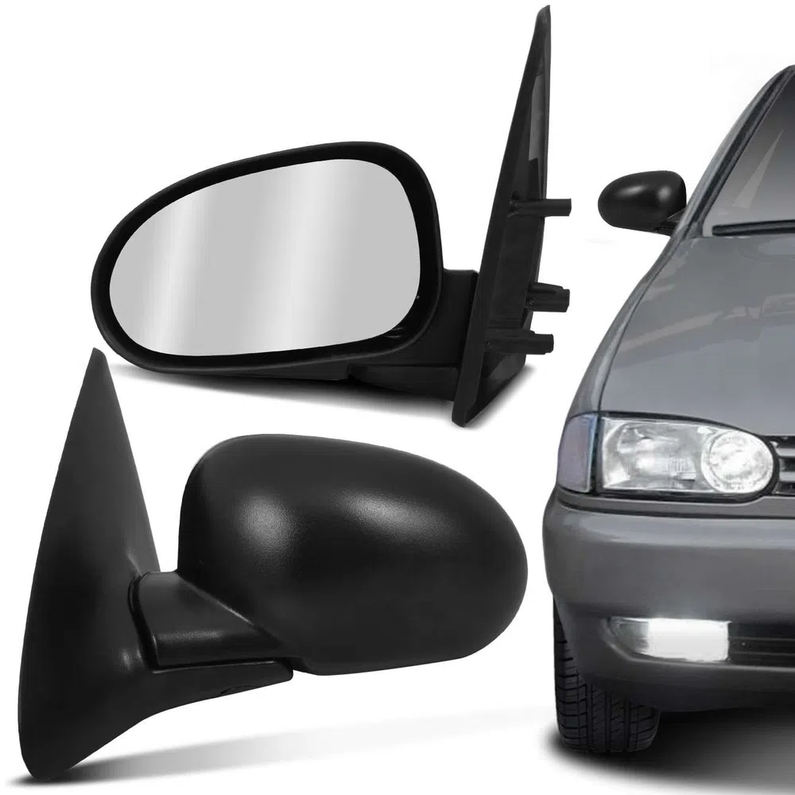
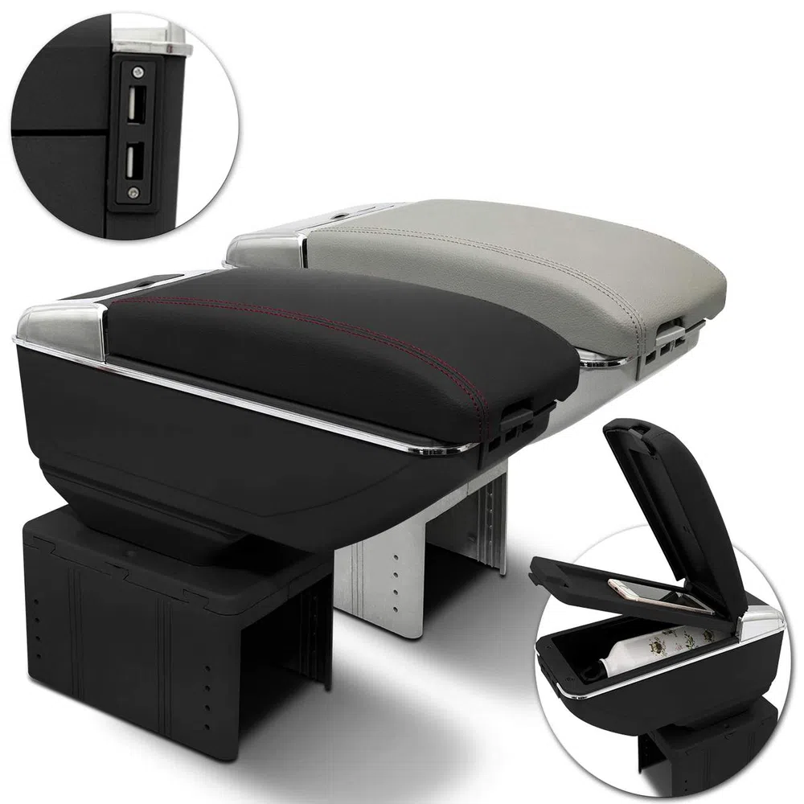

|
 |  |
Difusor de Ar Central, pois trata-se de um produto de fácil instalação e excelente-custo benefício. Com ele, seu veículo manterá a originalidade e terá um painel perfeito novamente. |
Prático e eficiente, este retrovisor possui ajuste dobrável e sua regulagem é por meio de toques no espelho. Fabricado em polipropileno de alta resistência e possuindo coloração preta, ele dará um acabamento perfeito |
Esse Descanso de Braço é ideal para quem deseja mais conforto e funcionalidade no veículo, com compatibilidade universal e tampa com revestimento em courvin este descanso é o item que falta em seu carro. |